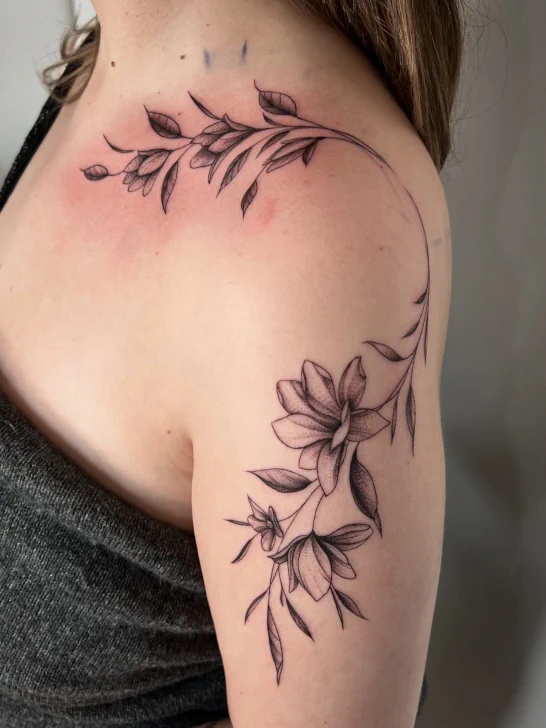
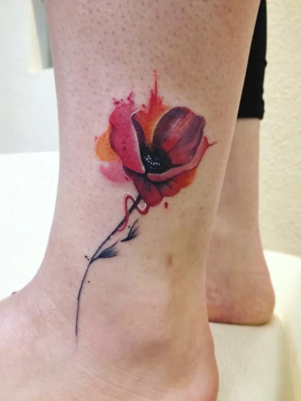

Blackwork
Bold, graphic designs using solid black ink. Ideal for striking geometric patterns, illustrative work, and cover-ups. Blackwork offers maximum visual impact and ages exceptionally well over time.

Fine Line
Precise, delicate linework perfect for minimalist designs, detailed portraits, and subtle, elegant tattoos. Fine line work requires a steady hand and meticulous attention to detail.

Watercolour
Soft, fluid colour washes that mimic the look of watercolour painting, bringing a painterly, artistic feel to your tattoo. Often combined with fine linework for a contemporary, eye-catching result.
Old School & Traditional
Classic bold outlines, iconic imagery and timeless designs rooted in the rich heritage of tattooing. Think anchors, roses, eagles and pin-ups — designed to stand the test of time.
Geometric
Clean, mathematical shapes and sacred geometry, from simple linework to complex mandala-inspired compositions. Precision is key — every angle and line must be perfect.
Abstract
Expressive, freeform designs that push beyond conventional styles into something truly one-of-a-kind. Abstract tattoos are perfect for clients who want something uniquely personal.
Not sure which style suits you? Describe your idea and Sina will suggest the best approach.
Book a Tattoo →See More Work
Browse the latest tattoos, flash designs and behind-the-scenes content on Instagram.